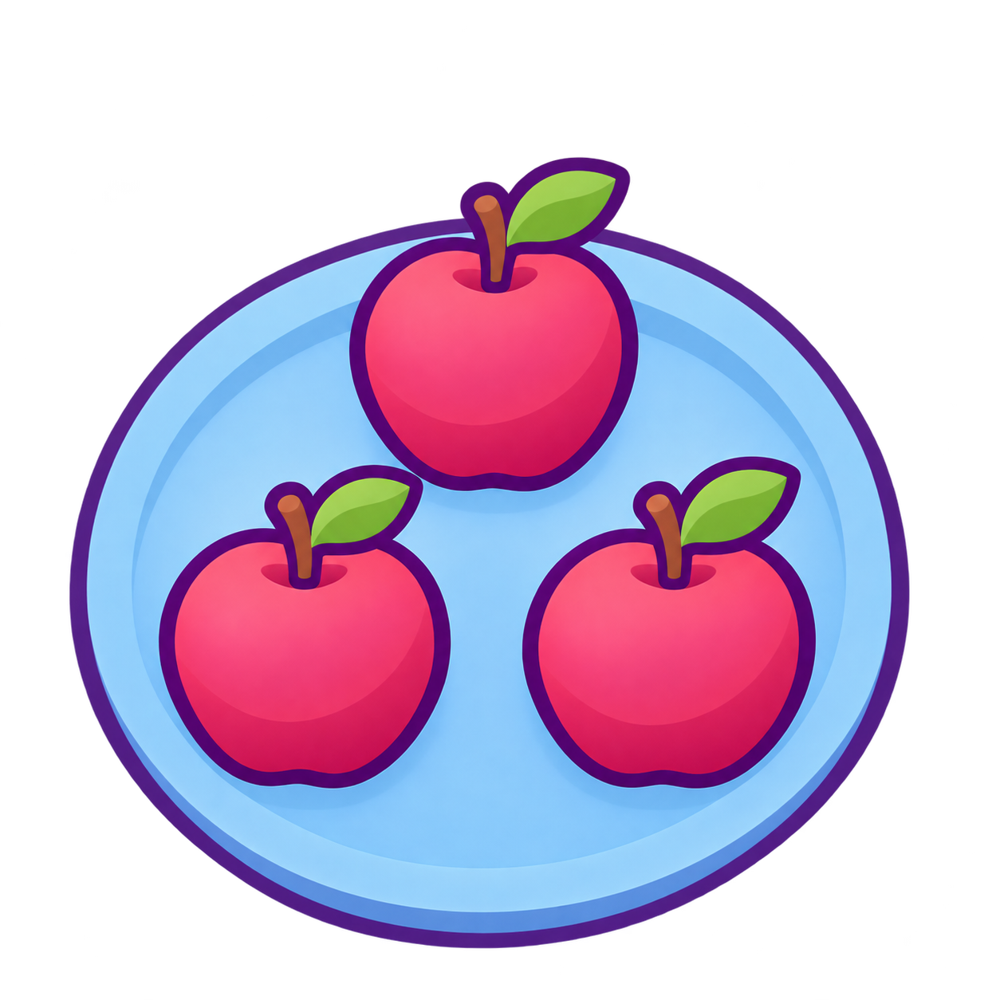

一つ · 3 apples
pending-owner-review

Prompt and source
{
"id": "apples-3",
"sourcePath": "/Users/ajhconway/.codex/generated_images/01a1c754-8518-76f3-96e4-45f5dd7f3217/exec-92a5db99-86c2-41da-a223-65acbf289201.png",
"original": "originals/apples-3-v1.png",
"sha256": "a555378fe966deea4d5318980fdae39e019a80c316770b185d7dc11ea14d21ee",
"width": 1254,
"height": 1254,
"alphaExtrema": [
0,
255
],
"transparentPixels": 791839,
"status": "pending-owner-review",
"visualReview": "Inspected: square composition, correct count/action, full silhouettes, established shaded style, transparent exterior; 145px/four-background review follows in gallery.",
"origin": "generated",
"source": "demos/short-context-250/artwork-v2/originals/apples-3-v1.png",
"prompt": "Use case: scientific-educational\nAsset type: one square vocabulary picture for a Japanese listening game\nStyle/medium: match the supplied Kikimashta cat PNG's polished cartoon illustration language. Smooth rounded substantial forms, clean bold deep-violet contours, restrained soft tonal shading inside forms and gentle dimensional color. Warm golden-yellow/amber, rich violet/lavender and soft pink accents. Softer, calmer rendering than a glossy clip-art sticker. No bright white shine streaks, exclamation-shaped glare, photographic texture, watercolor or sketch strokes.\nInput image role: STYLE REFERENCE ONLY. Study the cat's contour treatment, gentle shading, color relationships and simple forms. Do not reproduce the cat, headphones, paws, logo, lettering, Mount Fuji, torii, blossoms, sound marks, enclosing card or footer.\nScene/backdrop: genuinely transparent outer background with an alpha channel. No painted white backdrop, checkerboard, lavender or cream tint, colored vignette, decorative scene or frame. Preserve opaque white subject details. A sky scene may contain blue sky and clouds within its intended silhouette, but no ground or horizon strip.\nComposition/framing: one clear centered primary subject or the minimal action scene required by the word, full silhouette visible, about 65–75 percent of square canvas, generous margin. Readable at 145px.\nColor: use the reference's warm golden and violet family for decorative accents. Preserve the factual/teaching color of the subject, including yellow banana, blue paint, green shoots and white clouds.\nConstraints: correct anatomy, recognizable literal vocabulary subject, no answer labels, words, letters, branding, watermark, frame or decorative extras. Match the visual style rather than copying the cat's subject or background.\nPrimary request: Exactly 3 pink-red apples resting ON one simple empty sky-blue dinner plate, in a slight overhead view. Each apple has a short brown stem and one green leaf. All 3 apples must be fully visible and separately countable, with generous space between them; three apples in a triangular arrangement on the plate. One plate only. Match the approved reference's smooth thick violet contours and restrained soft shading; no glossy white glare marks. The plate and apples together fill about 75% of a SQUARE canvas. Input image 1 is STYLE ONLY: do not include cat, headphones, logo, lettering or reference decorations. Genuinely transparent outer background and opaque apples/plate. No words, numbers, quantity dots, arrows, badges, cut-off objects or decorative scenery. This is one complete answer-card illustration, not a sheet or a grid of cards.",
"references": [
{
"path": "/private/tmp/kikimashta-250-review/demos/short-context-250/artwork-v2/references/cat-style-reference.png",
"sha256": "0e48ebcb9346c77908b6573812ffee082e61695478f7e6d7d50f3d2ee8af693b"
}
]
}